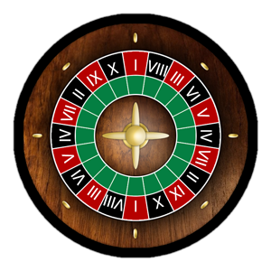
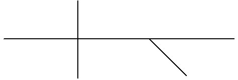
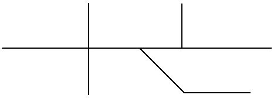

| Sentence |
|---|
I
II
III
IV
V
VI
VII
VIII
IX
X
Pick a pattern.
| Sentence |
|---|
First off,
Welcome to Roulette!
This game has been created in conjuction with your professor to further assist you with topics in your course. To ensure your success, you can find helpful tips below for gameplay.

Click "?" to get game instructions.
Hover over your total to see your stats for your current game.
Select the pattern of the sentence given, or whatever the given question is asking for, and select your bet total. Your potential winnings depend on how many patterns you pick. Choose either 1, 2, or 3 patterns and you will win 2X, 1.5X, or 1X your bet, respectively.

You may now play your bet and continue on with gameplay. If this button is grayed out, you forgot to do one of the following:
Good Luck!
CURRENT BET: 0
This overview collects some of the tips I give for distinguishing sentence patterns. I recommend that you print this out, or save it to your computer, and add your own tips as the semester progresses.
When patterns differ only in their complement slot (e.g., II and III, IV and V, IX and X), the adjective complement has a lower pattern number than the nominal complement.
WARNING: Some verbs can switch hit! They can be different patterns depending on what else is in the sentence. For example:
Forms of be: am, is, are, was, were, be, being, been.
I. NP be ADV/TP: The students are upstairs.

If the adverb is NOT an adverb of time or place, you don't have pattern I.

Both pattern II and III have the same essential diagram.
Equals sign test: The "be" verb in these sentences acts like an equals sign. If you substitute an equals sign for the verb and the equations convey the meaning of the sentences, you probably have patterns II or III. When the "be" verb is a helping (aka auxiliary) verb rather than the main verb, the equals sign won't work.
Flip test: Another test to distinguish pattern II and III from sentences where "be" is a helping verb is the "flip" test: if you can flip the subject and subject complement around the verb and the meaning of the sentence doesn't change, then the "be" verb is probably the main verb.
"Very" test: For pattern II only. If you can stick the word "very" between the "be" verb and the word that follows, you probably have pattern II.
Patterns I, II, and III cannot be made passive.
Typical verbs: seem, become
The basic diagram for IV and V looks just like the basic diagram for II and III. You can use the equals sign test and the flip test (above) for these linking verb patterns, too: if the test works, the main verb is a linking verb.
BE substitution test: You can usually substitute a be verb for the linking verb and the sentence meaning stays the same.
Important: for the "be substitution test," you are only MENTALLY substituting a form of "be." If your sentence ACTUALLY has a form of "be" in front of the complement, you do not have pattern IV or V!
Dictionaries do NOT use the linking verb label. Dictionaries will often label pattern IV as "intransitive" and pattern V as "transitive."
Pattern IV and V diagrams look a lot like passive pattern IX and X diagrams. I recommend that you don't diagram passive sentences.
Patterns IV and V cannot be made passive.
Typical verb: giggle, sleep, yawn

With an inTRANSitive verb, the action of the verb does not TRANSfer onto anything else. Nothing gets verbed on. The action remains with the subject, e.g., "Susie yawned." Nothing is being yawned--the action of yawning stays righ with Susie.
Dictionaries will often label pattern IV as "intransitive" as well as pattern VI, so if the dictionary labels your verb "intransitive," you still need to examine your sentence carefully to identify the pattern.
Pattern VI diagrams look like passive pattern VII diagrams. I recommend that you don't diagram passive sentences.
Pattern VI verbs cannot be made passive.
With a TRANSitive verb, the action of the verb gets TRANSferred onto an object. Something gets verbed on. The action is done to something besides the subject, e.g., Susie bounced the ball. The ball is being bounced.
All of these patterns--VII, VIII, IX, X--can be made passive. In fact, one test to see whether you have a transitive verb pattern is to make it passive.

Typical verbs: buy, say, know, enjoy
Passive pattern VII diagrams look like active pattern VI diagrams. I recommend that you don't diagram passive sentences.

Typical verbs: hand, give, tell
In an active voice sentence, the indirect object can be located in one of two places: (1) between the subject and verb or (2) in a to or for phrase anywhere else in the sentence.
An indirect object will NOT be located in a phrase that begins with by, from, with, or any other preposition!
When you transform the sentence to passive voice, you can put either the indirect object or the direct object in the subject position:
When the direct object is moved to the subject slot in a passive sentence, the passive pattern VIII diagram will look like an active pattern VI diagram. I recommend that you don't diagram passive sentences.
When you transform the sentence to passive voice, you can keep the active subject in a by phrase, or you can omit it. The active subject will NOT be located in a phrase that begins with to, from, with, or any other preposition!

Typical verbs: consider, elect, find, make
Both pattern II and III have the same essential diagram.
Patterns IX and X are "magic wand" sentences, in which the action of the verb transforms the object into its complement. The pairs of sentences below can show you the difference:
"To be" test: If a sentence is pattern IX or X, you can often mentally stick the phrase "to be" between the object and the object complement:
Important: for this test, you only MENTALLY add the words "to be."
Expletive "as": Sometimes pattern X has the word "as" stuck between object and complement. That's ok:
The job of an expletive is to call attention to what follows. An expletive "as" does not change the sentence pattern.
Passive pattern IX and X diagrams look a lot like active pattern IV and V diagrams. I recommend that you don't diagram passive voice sentences.
Passive voice diagrams
Passive voice diagrams are shown in ch. 5 of your textbook if you want to see them. However, I recommend that you don't diagram passive voice sentences. Instead, untransform the sentence first, making it active voice, then diagram it.
Question 1: You have not yet answered this question.
Question 2: You have not yet answered this question.
Question 3: You have not yet answered this question.
Question 4: You have not yet answered this question.
Question 5: You have not yet answered this question.
Question 6: You have not yet answered this question.
Question 7: You have not yet answered this question.
Question 8: You have not yet answered this question.
Question 9: You have not yet answered this question.
Question 10: You have not yet answered this question.
Question 11: You have not yet answered this question.
Question 12: You have not yet answered this question.
Question 13: You have not yet answered this question.
Question 14: You have not yet answered this question.
Question 15: You have not yet answered this question.
Question 16: You have not yet answered this question.
Question 17: You have not yet answered this question.
Question 18: You have not yet answered this question.
Question 19: You have not yet answered this question.
Question 20: You have not yet answered this question.
Question 21: You have not yet answered this question.
Question 22: You have not yet answered this question.
Question 23: You have not yet answered this question.
Question 24: You have not yet answered this question.
Question 25: You have not yet answered this question.
Question 1: You have not yet answered this question.
Question 2: You have not yet answered this question.
Question 3: You have not yet answered this question.
Question 4: You have not yet answered this question.
Question 5: You have not yet answered this question.
Question 6: You have not yet answered this question.
Question 7: You have not yet answered this question.
Question 8: You have not yet answered this question.
Question 9: You have not yet answered this question.
Question 10: You have not yet answered this question.
Question 11: You have not yet answered this question.
Question 12: You have not yet answered this question.
Question 13: You have not yet answered this question.
Question 14: You have not yet answered this question.
Question 15: You have not yet answered this question.
Question 16: You have not yet answered this question.
Question 17: You have not yet answered this question.
Question 18: You have not yet answered this question.
Question 19: You have not yet answered this question.
Question 20: You have not yet answered this question.
Question 21: You have not yet answered this question.
Question 22: You have not yet answered this question.
Question 23: You have not yet answered this question.
Question 24: You have not yet answered this question.
Question 25: You have not yet answered this question.